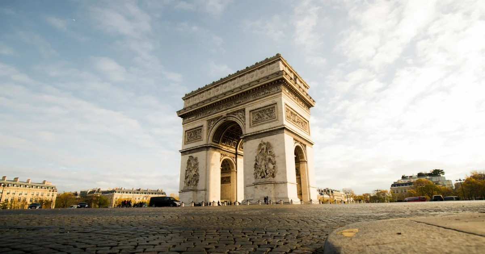

Paris, a capital da França e mundialmente conhecida como a "Cidade Luz", é um dos principais centros globais de cultura, moda, gastronomia e arte, situada às margens do rio Sena. A cidade encanta por sua rica história, arquitetura emblemática — destacando monumentos como a Torre Eiffel, a Catedral de Notre-Dame e o Arco do Triunfo — e uma atmosfera romântica única. Composta por diversos distritos (arrondissements) que misturam o charme histórico com a modernidade, Paris abriga museus renomados como o Louvre, além de vibrantes cafés e butiques de alta costura, tornando-se um destino inesquecível e um dos mais visitados do mundo.

Na imagem acima, podemos ver a icônica Torre Eiffel, um dos símbolos mais reconhecíveis de Paris e da França, iluminada à noite, oferecendo uma vista deslumbrante e romântica da cidade.

Na imagem acima, podemos ver o Arco do Triunfo, outro ícone de Paris, que homenageia aqueles que lutaram e morreram pela França durante a Revolução Francesa e as Guerras Napoleônicas.

Na imagem acima, podemos ver a Catedral de Notre-Dame, um dos exemplos mais notáveis da arquitetura gótica, famosa por seus vitrais deslumbrantes e sua história rica, incluindo eventos como a coroação de Napoleão Bonaparte.
Assim como Nova York, Tóquio também é conhecida por sua arte e cultura.
Quer saber mais sobre Paris? Clique aqui